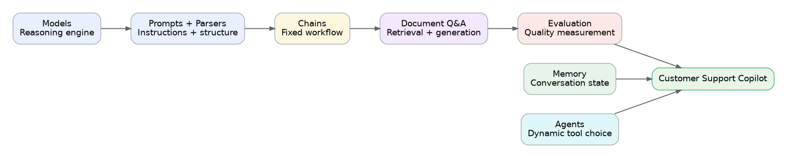

English-only, interview-focused review of Models, Memory, Chains, RAG, Evaluation, and Agents.

Convert an unstructured support message into a validated Python object.
🔊 Listen2. MemoryPreserve conversation context for each customer thread.
🔊 Listen3. ChainsCompose a deterministic prompt-to-model-to-parser workflow.
🔊 Listen4. Document Q&A / RAGAnswer support questions using retrieved evidence from local policy documents.
🔊 Listen5. EvaluationMeasure application quality with a repeatable test dataset.
🔊 Listen6. Agents & ToolsLet the model dynamically choose lookup and calculation tools.
🔊 ListenI used gpt-4o-mini with a Pydantic schema to classify support tickets into category, priority, and summary fields. The model returns a validated Python object that downstream systems can use safely.
I added thread-level conversation memory using a LangGraph checkpointer. Messages are stored under a thread ID, so follow-up questions can reuse earlier context while different customer sessions remain isolated.
I built a deterministic LCEL chain that formats a support ticket with a prompt template, sends it to gpt-4o-mini, and parses the model response into a plain string. I used a chain because the execution path is fixed.
I built a two-step RAG pipeline over local support policies. It loads and chunks documents, creates embeddings, indexes them in FAISS, retrieves the top relevant chunks, and asks gpt-4o-mini to answer only from that evidence with source attribution.
I created a small repeatable evaluation dataset and a baseline keyword scorer. I separated the idea of retrieval quality from answer quality and identified groundedness, correctness, relevance, and output format as production metrics.
I created a LangChain agent with two tools. The first retrieves subscription-plan facts, and the second calculates total cost. The agent calls the lookup tool first, passes the monthly price into the calculation tool, and then generates the final response.